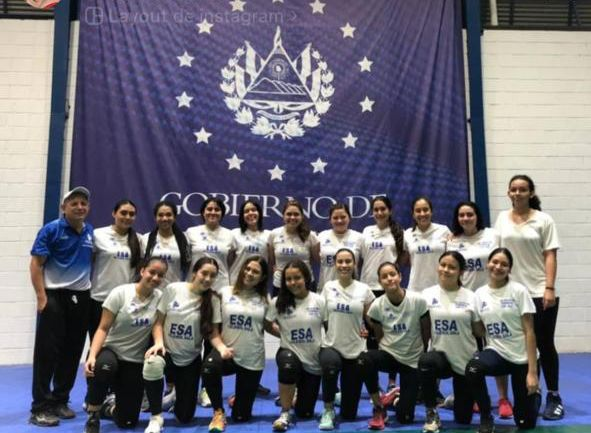
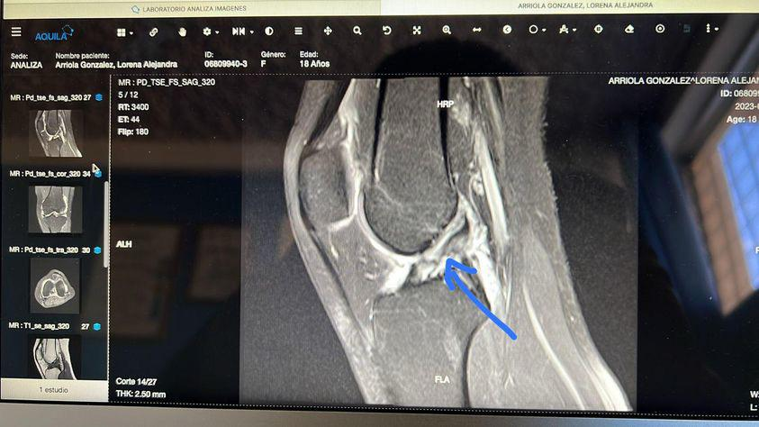

Volleyball
Lo practico desde los 13 años. Más que un deporte, es mi espacio para conectar, competir y superarme. El juego en equipo me enseñó la importancia de la disciplina y la estrategia.
EnlaceMi historia, mis pasiones, mi vida
Soy una estudiante de Ingeniería de Software de 20 años, apasionada por encontrar soluciones innovadoras y por vivir la vida al máximo. Creo en el poder de la disciplina, el trabajo en equipo y la curiosidad constante para forjar un futuro brillante.
Nací y crecí en El Salvador, en el seno de una familia pequeña pero increíblemente amorosa con raíces en Santa Ana. Desde muy pequeña, mis primeros recuerdos importantes están ligados a la curiosidad por descubrir cómo funcionaban las cosas y a un amor innato por los animales y los espacios abiertos.
Me formé en el Instituto Emiliani, donde obtuve mi bachillerato técnico en electrotecnia, una etapa que despertó mi fascinación por la tecnología y la resolución de problemas técnicos. Hoy, continúo mi formación como futura ingeniera de software en la ESEN. Cada paso en mi educación ha reforzado mi mentalidad analítica y mi deseo de aprender constantemente.
La disciplina y la perseverancia son los pilares que guían mi vida. Creo firmemente en el poder del trabajo en equipo y en la importancia de mantener una mente abierta y curiosa. Mi filosofía de vida se basa en aprovechar cada oportunidad para crecer, tanto personal como profesionalmente, y en contribuir positivamente a mi comunidad y al mundo que me rodea.
Tuve la oportunidad de formar parte de la Selección sub 19 y adquirir muchísima experiencia como jugadora.
Sufrí una lesión que me apartó de las canchas durante varios meses, lo que me hizo reflexionar sobre la importancia del cuidado físico y mental en el deporte.
Participé en un programa de voluntariado que me permitió conocer Argentina y nuevas personas.

Lo practico desde los 13 años. Más que un deporte, es mi espacio para conectar, competir y superarme. El juego en equipo me enseñó la importancia de la disciplina y la estrategia.
EnlaceMi lugar de paz. La biodiversidad marina, especialmente las mantarrayas, me maravilla y me recuerda la importancia de proteger nuestro planeta. Cada visita al mar recarga mi energía.
EnlaceSoy parte de esta familia desde los 10 años. Esta experiencia moldeó mi carácter, inculcándome valores esenciales de liderazgo, servicio y amor por la naturaleza. Me ha permitido viajar, conocer países increíbles y forjar amistades para toda la vida.
Enlace